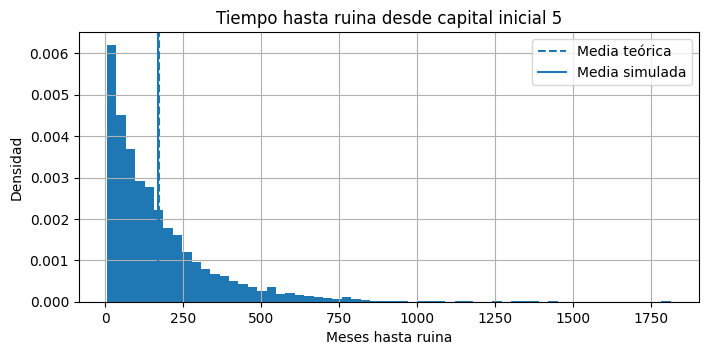

Semana 3 — Tiempos de Primera Pasada y Ocupación#
Esta sesión introduce dos herramientas para medir cuánto tarda una cadena en alcanzar un estado y cuánto tiempo pasa en cada estado.
Herramienta |
Definición usada en este laboratorio |
Idea de cálculo con NumPy |
|---|---|---|
Tiempo de primera pasada al estado objetivo \(j\) |
\(\tau_j=\min\{n\geq 0:X_n=j\}\) y \(m_i=E[\tau_j\mid X_0=i]\). Por definición, \(m_j=0\). |
Análisis de un paso: \(m_i=1+\sum_{k\neq j}P_{ik}m_k\), para \(i\neq j\), iterado hasta converger. |
Tiempo de ocupación en \(H\) períodos |
\(M_{ij}(H)=E\left[\sum_{n=0}^{H-1}\mathbf{1}(X_n=j)\mid X_0=i\right]\). |
Sumar las distribuciones \(\pi(0),\pi(1),\ldots,\pi(H-1)\). |
Convención importante: si usamos un horizonte de \(H=12\) períodos, sumamos exactamente 12 distribuciones, desde \(n=0\) hasta \(n=11\). Por eso los tiempos de ocupación suman 12 y los porcentajes suman 100 %.
El estado objetivo de una primera pasada no necesita ser absorbente. El cálculo se detiene conceptualmente en la primera llegada; lo que ocurra después no afecta el tiempo de primera pasada.
Dominios: conservación, inventarios y finanzas. En todos los ejercicios calculamos primero con NumPy y usamos jmarkov únicamente como verificación.
!pip install jmarkov
Requirement already satisfied: jmarkov in /opt/hostedtoolcache/Python/3.11.15/x64/lib/python3.11/site-packages (0.3.9)
Requirement already satisfied: numpy in /opt/hostedtoolcache/Python/3.11.15/x64/lib/python3.11/site-packages (from jmarkov) (2.4.1)
Requirement already satisfied: scipy in /opt/hostedtoolcache/Python/3.11.15/x64/lib/python3.11/site-packages (from jmarkov) (1.17.0)
Requirement already satisfied: typing in /opt/hostedtoolcache/Python/3.11.15/x64/lib/python3.11/site-packages (from jmarkov) (3.7.4.3)
import numpy as np
import matplotlib.pyplot as plt
from scipy.stats import poisson
from jmarkov.dtmc import dtmc
Cómo trabajar con el cuaderno#
Ejecute las celdas de arriba hacia abajo. Los bloques se clasifican así:
🧠 Código central: debe poder explicar la lógica general de cada instrucción.
🧩 Nueva herramienta: se introduce con una explicación antes de utilizarla.
🎨 Visualización proporcionada: ejecútela e interprete el resultado; no necesita dominar todavía todos los comandos de Matplotlib.
El código central evita deliberadamente formas compactas como zip, enumerate, comprensiones de listas y expresiones condicionales en una sola línea.
Ejercicio 1 — Hábitat del águila calva (básico)#
El equipo de conservación del Parque Nacional Yellowstone monitorea cada temporada el hábitat de un ejemplar del águila calva. El ave se mueve entre tres zonas: Bosque, Pradera y Laguna.
La matriz de transición estimada con registros históricos es:
a) Construya la matriz \(P\) en Python y verifique, fila por fila, que las probabilidades suman 1.
# 🧠 Código central
estados_aguila = ['Bosque', 'Pradera', 'Laguna']
P_aguila = np.array([
[0.55, 0.30, 0.15],
[0.20, 0.45, 0.35],
[0.25, 0.20, 0.55]
])
for indice_estado in range(len(estados_aguila)):
suma_fila = P_aguila[indice_estado, :].sum()
nombre_estado = estados_aguila[indice_estado]
print('Fila', nombre_estado, '- suma:', round(suma_fila, 4))
Fila Bosque - suma: 1.0
Fila Pradera - suma: 1.0
Fila Laguna - suma: 1.0
b) ¿Cuántas temporadas tarda en promedio el águila en llegar a la Pradera por primera vez desde el Bosque? ¿Y desde la Laguna?
Si \(m_i\) es el tiempo esperado hasta alcanzar la Pradera partiendo del estado \(i\), entonces:
La ecuación es circular, porque los tiempos aparecen a ambos lados. La resolveremos por aproximaciones sucesivas: empezamos con \(m^{(0)}=0\) y repetimos la misma actualización hasta que el vector casi no cambie.
La primera iteración produce un valor igual a 1 para cada estado no objetivo. En las siguientes iteraciones se incorporan trayectorias cada vez más largas.
# 🧠 Una iteración, término a término
objetivo_pradera = 1
numero_estados_aguila = len(estados_aguila)
tiempos_anteriores = np.zeros(numero_estados_aguila)
tiempos_nuevos = np.zeros(numero_estados_aguila)
for estado_actual in range(numero_estados_aguila):
if estado_actual != objetivo_pradera:
suma = 1.0
for estado_siguiente in range(numero_estados_aguila):
if estado_siguiente != objetivo_pradera:
suma = (
suma
+ P_aguila[estado_actual, estado_siguiente]
* tiempos_anteriores[estado_siguiente]
)
tiempos_nuevos[estado_actual] = suma
print('Primera iteración:', tiempos_nuevos)
Primera iteración: [1. 0. 1.]
# 🧠 Repetimos la misma actualización hasta converger
maximo_iteraciones = 2000
tolerancia = 0.00000001
tiempos_anteriores = np.zeros(numero_estados_aguila)
for iteracion in range(1, maximo_iteraciones + 1):
tiempos_nuevos = np.zeros(numero_estados_aguila)
for estado_actual in range(numero_estados_aguila):
if estado_actual != objetivo_pradera:
suma = 1.0
for estado_siguiente in range(numero_estados_aguila):
if estado_siguiente != objetivo_pradera:
suma = (
suma
+ P_aguila[estado_actual, estado_siguiente]
* tiempos_anteriores[estado_siguiente]
)
tiempos_nuevos[estado_actual] = suma
cambio_maximo = np.max(
np.abs(tiempos_nuevos - tiempos_anteriores)
)
tiempos_anteriores = tiempos_nuevos.copy()
if cambio_maximo < tolerancia:
break
m_pradera_manual = tiempos_anteriores.copy()
print('Iteraciones hasta convergencia:', iteracion)
print('Tiempo esperado de primera pasada a Pradera:')
for estado_actual in range(numero_estados_aguila):
if estado_actual != objetivo_pradera:
print(
estados_aguila[estado_actual], '-> Pradera:',
round(m_pradera_manual[estado_actual], 4),
'temporadas'
)
Iteraciones hasta convergencia: 64
Tiempo esperado de primera pasada a Pradera:
Bosque -> Pradera: 3.6364 temporadas
Laguna -> Pradera: 4.2424 temporadas
c) El águila se encuentra actualmente en la Laguna (\(X_0=2\)). Calcule el tiempo esperado de ocupación en cada hábitat durante 12 temporadas.
Como contamos exactamente 12 observaciones, sumamos:
# 🧠 Ocupación durante H=12 observaciones
H_aguila = 12
distribucion_laguna = np.array([0.0, 0.0, 1.0])
distribucion_actual = distribucion_laguna.copy()
ocupacion_aguila = distribucion_laguna.copy()
for periodo in range(1, H_aguila):
distribucion_actual = distribucion_actual @ P_aguila
ocupacion_aguila = ocupacion_aguila + distribucion_actual
print('Temporadas esperadas en cada hábitat:')
for indice_estado in range(numero_estados_aguila):
tiempo = ocupacion_aguila[indice_estado]
porcentaje = tiempo / H_aguila * 100
print(
estados_aguila[indice_estado], ':',
round(tiempo, 4), 'temporadas -',
round(porcentaje, 1), '%'
)
print('Suma de tiempos:', round(ocupacion_aguila.sum(), 4))
Temporadas esperadas en cada hábitat:
Bosque : 3.5743 temporadas - 29.8 %
Pradera : 3.2615 temporadas - 27.2 %
Laguna : 5.1642 temporadas - 43.0 %
Suma de tiempos: 12.0
d) Calcule con NumPy la distribución estacionaria \(\boldsymbol{\pi}\) y compare sus componentes con la fracción esperada de ocupación cuando el horizonte es grande.
En una cadena ergódica:
# 🧠 Distribución estacionaria por iteración
pi_anterior = np.array([1/3, 1/3, 1/3])
tolerancia_estacionaria = 0.00000001
for iteracion_pi in range(1, 1001):
pi_nueva = pi_anterior @ P_aguila
cambio_maximo = np.max(
np.abs(pi_nueva - pi_anterior)
)
pi_anterior = pi_nueva.copy()
if cambio_maximo < tolerancia_estacionaria:
break
pi_aguila_manual = pi_anterior.copy()
print('Distribución estacionaria:')
for indice_estado in range(numero_estados_aguila):
print(
estados_aguila[indice_estado], ':',
round(pi_aguila_manual[indice_estado], 4)
)
# Ocupación en un horizonte largo
H_largo = 200
distribucion_actual = distribucion_laguna.copy()
ocupacion_larga = distribucion_laguna.copy()
for periodo in range(1, H_largo):
distribucion_actual = distribucion_actual @ P_aguila
ocupacion_larga = ocupacion_larga + distribucion_actual
fraccion_ocupacion = ocupacion_larga / H_largo
print('\nFracción esperada de ocupación con H =', H_largo)
for indice_estado in range(numero_estados_aguila):
print(
estados_aguila[indice_estado], ':',
round(fraccion_ocupacion[indice_estado], 4)
)
Distribución estacionaria:
Bosque : 0.3349
Pradera : 0.3113
Laguna : 0.3538
Fracción esperada de ocupación con H = 200
Bosque : 0.3327
Pradera : 0.3089
Laguna : 0.3584
Verificación con jmarkov#
Irreducible: desde cualquier estado puede alcanzarse eventualmente cualquier otro.
Período 1: la cadena no está obligada a regresar siguiendo un ciclo rígido.
Una cadena finita irreducible y aperiódica es ergódica.
En jmarkov, occupation_time(n) suma desde \(P^0\) hasta \(P^n\). Por eso, para contar \(H\) observaciones usamos occupation_time(H - 1).
# Verificación con jmarkov
cadena_aguila = dtmc(P_aguila)
print('Es ergódica:', cadena_aguila.is_ergodic())
print('Período:', cadena_aguila.period())
m_aguila_jmarkov = cadena_aguila.first_passage_time(objetivo_pradera)
print('\nPrimera pasada a Pradera:')
indice_resultado = 0
for estado_actual in range(numero_estados_aguila):
if estado_actual != objetivo_pradera:
print(
estados_aguila[estado_actual],
'- NumPy:', round(m_pradera_manual[estado_actual], 4),
'- jmarkov:', round(m_aguila_jmarkov[indice_resultado][0], 4)
)
indice_resultado = indice_resultado + 1
ocupacion_aguila_jmarkov = (
cadena_aguila.occupation_time(H_aguila - 1)[2]
)
print('\nOcupación con NumPy:', np.round(ocupacion_aguila, 4))
print('Ocupación con jmarkov:', np.round(ocupacion_aguila_jmarkov, 4))
pi_aguila_jmarkov = cadena_aguila.steady_state()
print('\nPi con NumPy:', np.round(pi_aguila_manual, 4))
print('Pi con jmarkov:', np.round(pi_aguila_jmarkov, 4))
Es ergódica: True
Período: 1
Primera pasada a Pradera:
Bosque - NumPy: 3.6364 - jmarkov: 3.6364
Laguna - NumPy: 4.2424 - jmarkov: 4.2424
Ocupación con NumPy: [3.5743 3.2615 5.1642]
Ocupación con jmarkov: [3.5743 3.2615 5.1642]
Pi con NumPy: [0.3349 0.3113 0.3538]
Pi con jmarkov: [0.3349 0.3113 0.3538]
Ejercicio 2 — Inventario bajo política \((s,S)\): tiempo hasta stockout (intermedio)#
Una tienda aplica la política \((s=2,S=6)\): si el inventario al inicio del día es 2 o menor, se repone inmediatamente hasta 6 unidades. Después ocurre la demanda diaria \(D\sim\text{Poisson}(\lambda=2)\).
Si \(\widetilde{i}\) es el inventario disponible después de aplicar la política:
entonces:
a) Construya la matriz \(P\) de tamaño \(7 imes7\) y verifique sus filas.
# 🧠 Construcción explícita de la matriz
lambda_demanda = 2
punto_reorden = 2
nivel_reposicion = 6
capacidad = 6
numero_estados_inventario = capacidad + 1
P_inventario = np.zeros((
numero_estados_inventario,
numero_estados_inventario
))
for inventario_actual in range(numero_estados_inventario):
if inventario_actual <= punto_reorden:
inventario_disponible = nivel_reposicion
else:
inventario_disponible = inventario_actual
for inventario_siguiente in range(numero_estados_inventario):
if inventario_siguiente >= 1:
demanda_necesaria = (
inventario_disponible
- inventario_siguiente
)
P_inventario[
inventario_actual,
inventario_siguiente
] = poisson.pmf(
demanda_necesaria,
lambda_demanda
)
else:
P_inventario[
inventario_actual,
0
] = poisson.sf(
inventario_disponible - 1,
lambda_demanda
)
filas_validas = True
for inventario_actual in range(numero_estados_inventario):
suma_fila = P_inventario[inventario_actual, :].sum()
print('Fila', inventario_actual, '- suma:', round(suma_fila, 6))
if not np.isclose(suma_fila, 1.0):
filas_validas = False
print('\nTodas las filas son válidas:', filas_validas)
print('\nMatriz de transición:')
print(np.round(P_inventario, 3))
Fila 0 - suma: 1.0
Fila 1 - suma: 1.0
Fila 2 - suma: 1.0
Fila 3 - suma: 1.0
Fila 4 - suma: 1.0
Fila 5 - suma: 1.0
Fila 6 - suma: 1.0
Todas las filas son válidas: True
Matriz de transición:
[[0.017 0.036 0.09 0.18 0.271 0.271 0.135]
[0.017 0.036 0.09 0.18 0.271 0.271 0.135]
[0.017 0.036 0.09 0.18 0.271 0.271 0.135]
[0.323 0.271 0.271 0.135 0. 0. 0. ]
[0.143 0.18 0.271 0.271 0.135 0. 0. ]
[0.053 0.09 0.18 0.271 0.271 0.135 0. ]
[0.017 0.036 0.09 0.18 0.271 0.271 0.135]]
b) Calcule el tiempo esperado hasta el primer stockout desde cada estado:
¿Cuántos días se espera que pasen hasta el primer stockout si hoy hay 6 unidades?
# 🧠 Primera pasada hasta stockout
objetivo_stockout = 0
maximo_iteraciones = 5000
tolerancia = 0.00000001
tiempos_anteriores = np.zeros(numero_estados_inventario)
for iteracion in range(1, maximo_iteraciones + 1):
tiempos_nuevos = np.zeros(numero_estados_inventario)
for inventario_actual in range(numero_estados_inventario):
if inventario_actual != objetivo_stockout:
suma = 1.0
for inventario_siguiente in range(numero_estados_inventario):
if inventario_siguiente != objetivo_stockout:
suma = (
suma
+ P_inventario[
inventario_actual,
inventario_siguiente
]
* tiempos_anteriores[inventario_siguiente]
)
tiempos_nuevos[inventario_actual] = suma
cambio_maximo = np.max(
np.abs(tiempos_nuevos - tiempos_anteriores)
)
tiempos_anteriores = tiempos_nuevos.copy()
if cambio_maximo < tolerancia:
break
m_stockout_manual = tiempos_anteriores.copy()
print('Iteraciones hasta convergencia:', iteracion)
print('Tiempo esperado hasta stockout:')
for inventario_actual in range(1, numero_estados_inventario):
print(
'Desde', inventario_actual, 'unidades:',
round(m_stockout_manual[inventario_actual], 2),
'días'
)
Iteraciones hasta convergencia: 149
Tiempo esperado hasta stockout:
Desde 1 unidades: 9.29 días
Desde 2 unidades: 9.29 días
Desde 3 unidades: 6.97 días
Desde 4 unidades: 8.18 días
Desde 5 unidades: 8.81 días
Desde 6 unidades: 9.29 días
c) Partiendo de \(X_0=6\), calcule el tiempo esperado de ocupación durante 30 días. Sumamos exactamente \(\pi(0),\ldots,\pi(29)\).
¿Cuántos días se espera que el inventario esté en stockout? ¿Cuántos días estará en zona de reorden, \(X\leq2\)?
# 🧠 Ocupación durante H=30 días
H_inventario = 30
distribucion_inicial_6 = np.zeros(numero_estados_inventario)
distribucion_inicial_6[6] = 1.0
distribucion_actual = distribucion_inicial_6.copy()
ocupacion_inventario = distribucion_inicial_6.copy()
for dia in range(1, H_inventario):
distribucion_actual = distribucion_actual @ P_inventario
ocupacion_inventario = ocupacion_inventario + distribucion_actual
print('Días esperados en cada nivel:')
for inventario_actual in range(numero_estados_inventario):
tiempo = ocupacion_inventario[inventario_actual]
porcentaje = tiempo / H_inventario * 100
print(
'Estado', inventario_actual, ':',
round(tiempo, 3), 'días -',
round(porcentaje, 1), '%'
)
dias_zona_reorden = 0.0
for inventario_actual in range(punto_reorden + 1):
dias_zona_reorden = (
dias_zona_reorden
+ ocupacion_inventario[inventario_actual]
)
print('\nDías esperados con stockout:', round(ocupacion_inventario[0], 3))
print('Días esperados en zona de reorden:', round(dias_zona_reorden, 3))
print('Suma de tiempos:', round(ocupacion_inventario.sum(), 4))
Días esperados en cada nivel:
Estado 0 : 3.042 días - 10.1 %
Estado 1 : 3.374 días - 11.2 %
Estado 2 : 4.984 días - 16.6 %
Estado 3 : 5.841 días - 19.5 %
Estado 4 : 5.592 días - 18.6 %
Estado 5 : 4.299 días - 14.3 %
Estado 6 : 2.868 días - 9.6 %
Días esperados con stockout: 3.042
Días esperados en zona de reorden: 11.4
Suma de tiempos: 30.0
d) Validación Monte Carlo. Estime \(m_{6,0}\) mediante simulación.
Primero simulamos una sola trayectoria. La instrucción
rng.choice(numero_estados, p=P[estado_actual])
selecciona el siguiente estado usando como probabilidades la fila de la matriz correspondiente al estado actual.
# 🧠 Una sola trayectoria
rng_inventario = np.random.default_rng(seed=42)
estado_actual = 6
maximo_dias = 2000
llego_a_stockout = False
dias_hasta_stockout = np.nan
for dia in range(1, maximo_dias + 1):
estado_actual = rng_inventario.choice(
numero_estados_inventario,
p=P_inventario[estado_actual]
)
if estado_actual == objetivo_stockout:
dias_hasta_stockout = dia
llego_a_stockout = True
break
if llego_a_stockout:
print('La trayectoria llegó a stockout en el día', dias_hasta_stockout)
else:
print('La trayectoria no llegó a stockout dentro del límite')
La trayectoria llegó a stockout en el día 9
# 🧠 Repetimos el procedimiento 5000 veces
numero_simulaciones = 5000
rng_inventario = np.random.default_rng(seed=42)
tiempos_simulados = []
for simulacion in range(numero_simulaciones):
estado_actual = 6
llego_a_stockout = False
for dia in range(1, maximo_dias + 1):
estado_actual = rng_inventario.choice(
numero_estados_inventario,
p=P_inventario[estado_actual]
)
if estado_actual == objetivo_stockout:
tiempos_simulados.append(dia)
llego_a_stockout = True
break
if llego_a_stockout == False:
tiempos_simulados.append(np.nan)
tiempos_validos = []
for tiempo in tiempos_simulados:
if not np.isnan(tiempo):
tiempos_validos.append(tiempo)
media_simulada = np.mean(tiempos_validos)
media_teorica = m_stockout_manual[6]
error_relativo = (
abs(media_simulada - media_teorica)
/ media_teorica
* 100
)
print('Valor teórico:', round(media_teorica, 2), 'días')
print('Valor simulado:', round(media_simulada, 2), 'días')
print('Trayectorias válidas:', len(tiempos_validos), 'de', numero_simulaciones)
print('Error relativo:', round(error_relativo, 2), '%')
Valor teórico: 9.29 días
Valor simulado: 9.33 días
Trayectorias válidas: 5000 de 5000
Error relativo: 0.44 %
e) Compare la política \((s=2,S=6)\) con la política \((s=3,S=6)\). Evalúe ambas políticas mediante el tiempo esperado hasta stockout desde \(X_0=6\).
Estamos evaluando dos políticas dadas. Todavía no estamos buscando automáticamente la política óptima.
# 🧠 Matriz de la política alternativa
punto_reorden_alternativo = 3
P_inventario_alternativa = np.zeros((
numero_estados_inventario,
numero_estados_inventario
))
for inventario_actual in range(numero_estados_inventario):
if inventario_actual <= punto_reorden_alternativo:
inventario_disponible = nivel_reposicion
else:
inventario_disponible = inventario_actual
for inventario_siguiente in range(numero_estados_inventario):
if inventario_siguiente >= 1:
demanda_necesaria = (
inventario_disponible
- inventario_siguiente
)
P_inventario_alternativa[
inventario_actual,
inventario_siguiente
] = poisson.pmf(
demanda_necesaria,
lambda_demanda
)
else:
P_inventario_alternativa[
inventario_actual,
0
] = poisson.sf(
inventario_disponible - 1,
lambda_demanda
)
# Primera pasada para la política alternativa
tiempos_anteriores = np.zeros(numero_estados_inventario)
for iteracion in range(1, maximo_iteraciones + 1):
tiempos_nuevos = np.zeros(numero_estados_inventario)
for inventario_actual in range(numero_estados_inventario):
if inventario_actual != objetivo_stockout:
suma = 1.0
for inventario_siguiente in range(numero_estados_inventario):
if inventario_siguiente != objetivo_stockout:
suma = (
suma
+ P_inventario_alternativa[
inventario_actual,
inventario_siguiente
]
* tiempos_anteriores[inventario_siguiente]
)
tiempos_nuevos[inventario_actual] = suma
cambio_maximo = np.max(
np.abs(tiempos_nuevos - tiempos_anteriores)
)
tiempos_anteriores = tiempos_nuevos.copy()
if cambio_maximo < tolerancia:
break
m_stockout_alternativa = tiempos_anteriores.copy()
print('Política (s=2, S=6):', round(m_stockout_manual[6], 2), 'días')
print('Política (s=3, S=6):', round(m_stockout_alternativa[6], 2), 'días')
print(
'Diferencia:',
round(m_stockout_alternativa[6] - m_stockout_manual[6], 2),
'días'
)
Política (s=2, S=6): 9.29 días
Política (s=3, S=6): 18.79 días
Diferencia: 9.5 días
Verificación con jmarkov#
# Verificación de las dos políticas
cadena_inventario = dtmc(P_inventario)
cadena_inventario_alternativa = dtmc(P_inventario_alternativa)
m_inventario_jmarkov = cadena_inventario.first_passage_time(0)
m_alternativa_jmarkov = (
cadena_inventario_alternativa.first_passage_time(0)
)
print('Primera pasada con (s=2, S=6):')
for inventario_actual in range(1, numero_estados_inventario):
indice_jmarkov = inventario_actual - 1
print(
'Estado', inventario_actual,
'- NumPy:', round(m_stockout_manual[inventario_actual], 2),
'- jmarkov:', round(m_inventario_jmarkov[indice_jmarkov][0], 2)
)
print('\nDesde X0=6 con política alternativa:')
print('NumPy:', round(m_stockout_alternativa[6], 2))
print('jmarkov:', round(m_alternativa_jmarkov[5][0], 2))
ocupacion_inventario_jmarkov = (
cadena_inventario.occupation_time(H_inventario - 1)[6]
)
print('\nOcupación con NumPy:', np.round(ocupacion_inventario, 3))
print('Ocupación con jmarkov:', np.round(ocupacion_inventario_jmarkov, 3))
Primera pasada con (s=2, S=6):
Estado 1 - NumPy: 9.29 - jmarkov: 9.29
Estado 2 - NumPy: 9.29 - jmarkov: 9.29
Estado 3 - NumPy: 6.97 - jmarkov: 6.97
Estado 4 - NumPy: 8.18 - jmarkov: 8.18
Estado 5 - NumPy: 8.81 - jmarkov: 8.81
Estado 6 - NumPy: 9.29 - jmarkov: 9.29
Desde X0=6 con política alternativa:
NumPy: 18.79
jmarkov: 18.79
Ocupación con NumPy: [3.042 3.374 4.984 5.841 5.592 4.299 2.868]
Ocupación con jmarkov: [3.042 3.374 4.984 5.841 5.592 4.299 2.868]
Ejercicio 3 — Fondo de inversión: tiempo hasta ruina (profundización guiada)#
Un fondo de capital privado monitorea su nivel de capital cada mes. El capital se mide en unidades de USD 1 millón y puede tomar valores entre 0 y 8. Cuando llega a 0, el fondo entra en estado de ruina y solicita una inyección de capital.
Las probabilidades son:
a) Construya la matriz \(P\) de tamaño \(9 imes9\) y verifique sus filas.
# 🧠 Construcción de la matriz del fondo
numero_estados_fondo = 9
P_fondo = np.zeros((numero_estados_fondo, numero_estados_fondo))
# Estado 0: inyección de capital o permanencia en ruina
P_fondo[0, 0] = 0.30
P_fondo[0, 1] = 0.70
# Estados interiores 1,...,7
for capital_actual in range(1, 8):
P_fondo[capital_actual, capital_actual - 1] = 0.35
P_fondo[capital_actual, capital_actual] = 0.20
P_fondo[capital_actual, capital_actual + 1] = 0.45
# Estado superior 8
P_fondo[8, 7] = 0.55
P_fondo[8, 8] = 0.45
filas_validas = True
for capital_actual in range(numero_estados_fondo):
suma_fila = P_fondo[capital_actual, :].sum()
print('Fila', capital_actual, '- suma:', round(suma_fila, 6))
if not np.isclose(suma_fila, 1.0):
filas_validas = False
print('\nTodas las filas son válidas:', filas_validas)
Fila 0 - suma: 1.0
Fila 1 - suma: 1.0
Fila 2 - suma: 1.0
Fila 3 - suma: 1.0
Fila 4 - suma: 1.0
Fila 5 - suma: 1.0
Fila 6 - suma: 1.0
Fila 7 - suma: 1.0
Fila 8 - suma: 1.0
Todas las filas son válidas: True
b) Calcule el tiempo esperado hasta ruina desde cada nivel de capital. ¿Cuántos meses tarda, en promedio, un fondo que comienza en el nivel 5?
# 🧠 Tiempo de primera pasada hasta ruina
objetivo_ruina = 0
maximo_iteraciones_fondo = 20000
tolerancia_fondo = 0.000001
tiempos_anteriores = np.zeros(numero_estados_fondo)
for iteracion in range(1, maximo_iteraciones_fondo + 1):
tiempos_nuevos = np.zeros(numero_estados_fondo)
for capital_actual in range(numero_estados_fondo):
if capital_actual != objetivo_ruina:
suma = 1.0
for capital_siguiente in range(numero_estados_fondo):
if capital_siguiente != objetivo_ruina:
suma = (
suma
+ P_fondo[capital_actual, capital_siguiente]
* tiempos_anteriores[capital_siguiente]
)
tiempos_nuevos[capital_actual] = suma
cambio_maximo = np.max(
np.abs(tiempos_nuevos - tiempos_anteriores)
)
tiempos_anteriores = tiempos_nuevos.copy()
if cambio_maximo < tolerancia_fondo:
break
m_ruina_manual = tiempos_anteriores.copy()
print('Iteraciones hasta convergencia:', iteracion)
print('Tiempo esperado hasta ruina:')
for capital_actual in range(1, numero_estados_fondo):
print(
'Capital', capital_actual, ':',
round(m_ruina_manual[capital_actual], 2),
'meses'
)
print(
'\nDesde capital 5:',
round(m_ruina_manual[5], 2), 'meses, equivalentes a',
round(m_ruina_manual[5] / 12, 1), 'años'
)
Iteraciones hasta convergencia: 2380
Tiempo esperado hasta ruina:
Capital 1 : 58.64 meses
Capital 2 : 102.02 meses
Capital 3 : 133.54 meses
Capital 4 : 155.84 meses
Capital 5 : 170.96 meses
Capital 6 : 180.49 meses
Capital 7 : 185.69 meses
Capital 8 : 187.51 meses
Desde capital 5: 170.96 meses, equivalentes a 14.2 años
c) Partiendo de \(X_0=5\), calcule el tiempo de ocupación durante 60 meses, es decir, sumando \(\pi(0),\ldots,\pi(59)\). ¿Cuántos meses se espera que el fondo permanezca en ruina? ¿Cuántos meses estará en la zona alta, \(X\geq6\)?
# 🧠 Ocupación durante H=60 meses
H_fondo = 60
distribucion_inicial_5 = np.zeros(numero_estados_fondo)
distribucion_inicial_5[5] = 1.0
distribucion_actual = distribucion_inicial_5.copy()
ocupacion_fondo = distribucion_inicial_5.copy()
for mes in range(1, H_fondo):
distribucion_actual = distribucion_actual @ P_fondo
ocupacion_fondo = ocupacion_fondo + distribucion_actual
print('Meses esperados en cada nivel de capital:')
for capital_actual in range(numero_estados_fondo):
tiempo = ocupacion_fondo[capital_actual]
porcentaje = tiempo / H_fondo * 100
print(
'Capital', capital_actual, ':',
round(tiempo, 3), 'meses -',
round(porcentaje, 1), '%'
)
meses_zona_alta = 0.0
for capital_actual in range(6, numero_estados_fondo):
meses_zona_alta = meses_zona_alta + ocupacion_fondo[capital_actual]
print('\nMeses esperados en ruina:', round(ocupacion_fondo[0], 3))
print('Meses esperados en zona alta:', round(meses_zona_alta, 3))
print('Suma de tiempos:', round(ocupacion_fondo.sum(), 4))
Meses esperados en cada nivel de capital:
Capital 0 : 1.18 meses - 2.0 %
Capital 1 : 2.429 meses - 4.0 %
Capital 2 : 3.326 meses - 5.5 %
Capital 3 : 4.653 meses - 7.8 %
Capital 4 : 6.584 meses - 11.0 %
Capital 5 : 9.356 meses - 15.6 %
Capital 6 : 10.434 meses - 17.4 %
Capital 7 : 12.297 meses - 20.5 %
Capital 8 : 9.741 meses - 16.2 %
Meses esperados en ruina: 1.18
Meses esperados en zona alta: 32.472
Suma de tiempos: 60.0
d) Validación Monte Carlo. En el ejercicio anterior escribimos la simulación completa. Ahora encapsulamos el mismo procedimiento en una función, porque lo reutilizaremos con distintas matrices.
La función sigue siendo un algoritmo sencillo:
recibe el estado inicial;
simula un período usando una fila de \(P\);
se detiene cuando alcanza el objetivo;
devuelve el número de períodos transcurridos.
# 🧩 Función reutilizable para una trayectoria
def simular_primera_pasada(
P,
estado_inicial,
estado_objetivo,
maximo_periodos,
generador
):
numero_estados = len(P)
estado_actual = estado_inicial
for periodo in range(1, maximo_periodos + 1):
estado_actual = generador.choice(
numero_estados,
p=P[estado_actual]
)
if estado_actual == estado_objetivo:
return periodo
return np.nan
# 🧠 Repetimos la función con un ciclo ordinario
numero_simulaciones_fondo = 5000
maximo_meses = 5000
rng_fondo = np.random.default_rng(seed=7)
tiempos_ruina_simulados = []
for simulacion in range(numero_simulaciones_fondo):
tiempo = simular_primera_pasada(
P_fondo,
estado_inicial=5,
estado_objetivo=0,
maximo_periodos=maximo_meses,
generador=rng_fondo
)
tiempos_ruina_simulados.append(tiempo)
tiempos_ruina_validos = []
for tiempo in tiempos_ruina_simulados:
if not np.isnan(tiempo):
tiempos_ruina_validos.append(tiempo)
media_ruina_simulada = np.mean(tiempos_ruina_validos)
media_ruina_teorica = m_ruina_manual[5]
error_relativo_ruina = (
abs(media_ruina_simulada - media_ruina_teorica)
/ media_ruina_teorica
* 100
)
print('Valor teórico:', round(media_ruina_teorica, 2), 'meses')
print('Valor simulado:', round(media_ruina_simulada, 2), 'meses')
print(
'Trayectorias válidas:',
len(tiempos_ruina_validos),
'de', numero_simulaciones_fondo
)
print('Error relativo:', round(error_relativo_ruina, 2), '%')
Valor teórico: 170.96 meses
Valor simulado: 169.57 meses
Trayectorias válidas: 5000 de 5000
Error relativo: 0.81 %
🎨 Visualización proporcionada#
La siguiente celda no hace parte de los contenidos de programación evaluados. No es necesario comprender todos los comandos de Matplotlib. Concéntrese en interpretar:
la dispersión de los tiempos simulados;
la diferencia entre una trayectoria particular y el valor esperado;
la cercanía entre la media simulada y la media teórica.
# 🎨 Visualización proporcionada
plt.figure(figsize=(8, 3.5))
plt.hist(tiempos_ruina_validos, bins=60, density=True)
plt.axvline(
media_ruina_teorica,
linestyle='--',
label='Media teórica'
)
plt.axvline(
media_ruina_simulada,
linestyle='-',
label='Media simulada'
)
plt.xlabel('Meses hasta ruina')
plt.ylabel('Densidad')
plt.title('Tiempo hasta ruina desde capital inicial 5')
plt.legend()
plt.grid()
plt.show()

e) El fondo modifica su estrategia: la probabilidad de ganancia aumenta de \(0.45\) a \(0.52\) y la probabilidad de pérdida disminuye de \(0.35\) a \(0.28\). Reconstruya la cadena y compare los tiempos esperados hasta ruina.
La nueva cadena se mueve con menor frecuencia hacia la ruina. Por eso la iteración puede necesitar más pasos para converger.
De nuevo, estamos evaluando dos estrategias definidas; no estamos resolviendo todavía un problema de optimización de políticas.
# 🧠 Nueva estrategia de inversión
probabilidad_ganancia_nueva = 0.52
probabilidad_perdida_nueva = 0.28
probabilidad_sin_cambio_nueva = (
1
- probabilidad_ganancia_nueva
- probabilidad_perdida_nueva
)
P_fondo_nuevo = P_fondo.copy()
for capital_actual in range(1, 8):
P_fondo_nuevo[capital_actual, capital_actual - 1] = (
probabilidad_perdida_nueva
)
P_fondo_nuevo[capital_actual, capital_actual] = (
probabilidad_sin_cambio_nueva
)
P_fondo_nuevo[capital_actual, capital_actual + 1] = (
probabilidad_ganancia_nueva
)
# Primera pasada con la nueva estrategia
tiempos_anteriores = np.zeros(numero_estados_fondo)
maximo_iteraciones_nuevo = 200000
tolerancia_nueva = 0.000001
for iteracion in range(1, maximo_iteraciones_nuevo + 1):
tiempos_nuevos = np.zeros(numero_estados_fondo)
for capital_actual in range(numero_estados_fondo):
if capital_actual != objetivo_ruina:
suma = 1.0
for capital_siguiente in range(numero_estados_fondo):
if capital_siguiente != objetivo_ruina:
suma = (
suma
+ P_fondo_nuevo[
capital_actual,
capital_siguiente
]
* tiempos_anteriores[capital_siguiente]
)
tiempos_nuevos[capital_actual] = suma
cambio_maximo = np.max(
np.abs(tiempos_nuevos - tiempos_anteriores)
)
tiempos_anteriores = tiempos_nuevos.copy()
if cambio_maximo < tolerancia_nueva:
break
m_ruina_nuevo_manual = tiempos_anteriores.copy()
print('Iteraciones hasta convergencia:', iteracion)
print('Comparación de tiempos hasta ruina:')
for capital_actual in range(1, numero_estados_fondo):
tiempo_original = m_ruina_manual[capital_actual]
tiempo_nuevo = m_ruina_nuevo_manual[capital_actual]
diferencia = tiempo_nuevo - tiempo_original
print(
'Capital', capital_actual,
'- original:', round(tiempo_original, 1),
'- nueva:', round(tiempo_nuevo, 1),
'- diferencia:', round(diferencia, 1)
)
Iteraciones hasta convergencia: 12894
Comparación de tiempos hasta ruina:
Capital 1 - original: 58.6 - nueva: 451.8 - diferencia: 393.2
Capital 2 - original: 102.0 - nueva: 693.2 - diferencia: 591.2
Capital 3 - original: 133.5 - nueva: 821.3 - diferencia: 687.7
Capital 4 - original: 155.8 - nueva: 888.3 - diferencia: 732.4
Capital 5 - original: 171.0 - nueva: 922.5 - diferencia: 751.5
Capital 6 - original: 180.5 - nueva: 938.9 - diferencia: 758.4
Capital 7 - original: 185.7 - nueva: 945.9 - diferencia: 760.2
Capital 8 - original: 187.5 - nueva: 947.7 - diferencia: 760.2
Verificación con jmarkov#
# Verificación de las dos estrategias
cadena_fondo = dtmc(P_fondo)
cadena_fondo_nuevo = dtmc(P_fondo_nuevo)
print('Cadena original ergódica:', cadena_fondo.is_ergodic())
print('Cadena nueva ergódica:', cadena_fondo_nuevo.is_ergodic())
m_fondo_jmarkov = cadena_fondo.first_passage_time(0)
m_fondo_nuevo_jmarkov = cadena_fondo_nuevo.first_passage_time(0)
print('\nEstrategia original:')
for capital_actual in range(1, numero_estados_fondo):
indice_jmarkov = capital_actual - 1
print(
'Capital', capital_actual,
'- NumPy:', round(m_ruina_manual[capital_actual], 2),
'- jmarkov:', round(m_fondo_jmarkov[indice_jmarkov][0], 2)
)
print('\nEstrategia nueva:')
for capital_actual in range(1, numero_estados_fondo):
indice_jmarkov = capital_actual - 1
print(
'Capital', capital_actual,
'- NumPy:', round(m_ruina_nuevo_manual[capital_actual], 1),
'- jmarkov:', round(m_fondo_nuevo_jmarkov[indice_jmarkov][0], 1)
)
Cadena original ergódica: True
Cadena nueva ergódica: True
Estrategia original:
Capital 1 - NumPy: 58.64 - jmarkov: 58.64
Capital 2 - NumPy: 102.02 - jmarkov: 102.02
Capital 3 - NumPy: 133.54 - jmarkov: 133.54
Capital 4 - NumPy: 155.84 - jmarkov: 155.84
Capital 5 - NumPy: 170.96 - jmarkov: 170.96
Capital 6 - NumPy: 180.49 - jmarkov: 180.49
Capital 7 - NumPy: 185.69 - jmarkov: 185.69
Capital 8 - NumPy: 187.51 - jmarkov: 187.51
Estrategia nueva:
Capital 1 - NumPy: 451.8 - jmarkov: 451.8
Capital 2 - NumPy: 693.2 - jmarkov: 693.2
Capital 3 - NumPy: 821.3 - jmarkov: 821.3
Capital 4 - NumPy: 888.3 - jmarkov: 888.3
Capital 5 - NumPy: 922.5 - jmarkov: 922.5
Capital 6 - NumPy: 938.9 - jmarkov: 938.9
Capital 7 - NumPy: 945.9 - jmarkov: 945.9
Capital 8 - NumPy: 947.7 - jmarkov: 947.7
Ejercicio abierto — Gestión de inventario de medicamentos críticos#
Un hospital gestiona un medicamento crítico con capacidad máxima de 10 unidades. La demanda diaria sigue una distribución Poisson con tasa \(\lambda=2\). La política es \((s=3,S=10)\): si el inventario al inicio del día es 3 o menor, se repone hasta 10 antes de atender la demanda.
Checkpoints#
Modelo: derive las reglas y construya \(P\).
Primera pasada: calcule el tiempo esperado hasta stockout desde cada estado.
Ocupación: durante \(H=60\) días, sume \(\pi(0),\ldots,\pi(59)\) y calcule los días esperados en zona crítica, \(X\leq3\).
Monte Carlo: valide \(m_{10,0}\) con 3000 trayectorias.
Verificación: compare con
jmarkovusandooccupation_time(59).
Antes de aceptar código generado por una IA, compruebe al menos una transición y una iteración que dependan realmente de la matriz.
Cómo usar una IA para resolver el ejercicio#
Paso 1. Escriba primero las reglas de transición.
Paso 2. Ejecute la celda de referencia y conserve sus valores.
Paso 3. Pida a la IA código legible, sin zip, enumerate, comprensiones de listas ni expresiones condicionales en una sola línea.
Paso 4. Compare la respuesta con las referencias antes de ejecutar las 3000 simulaciones.
Prompt sugerido:
Estoy modelando el inventario de un medicamento como una CMTD:
X_n = unidades al inicio del día n
S = {0,1,...,10}
P[i,j] = P(X_(n+1)=j | X_n=i)
Política (s=3,S=10): si i <= 3, se repone hasta 10 antes de atender la demanda.
Demanda D ~ Poisson(lambda=2), sin backorder.
Reglas:
- inventario_disponible = 10 si i <= 3; en otro caso, inventario_disponible = i.
- P[i,j] = P(D = inventario_disponible-j) para j >= 1.
- P[i,0] = P(D >= inventario_disponible).
Ayúdame en este orden:
1. Construir P con NumPy y scipy.stats.poisson y verificar cada fila.
2. Calcular el tiempo hasta stockout mediante la iteración
m_i = 1 + suma_{k != 0} P[i,k] m_k, sin jmarkov.
3. Calcular ocupación durante H=60 observaciones sumando pi(0),...,pi(59).
4. Validar m_(10,0) con 3000 simulaciones y seed=42.
5. Verificar al final con jmarkov, usando occupation_time(59).
Escribe ciclos y condicionales explícitos. No uses zip, enumerate,
comprensiones de listas ni expresiones condicionales en una sola línea.
Marca cualquier código de Matplotlib como visualización proporcionada.
# 🧠 Referencias manuales antes de usar la IA
lambda_hospital = 2
punto_reorden_hospital = 3
nivel_reposicion_hospital = 10
capacidad_hospital = 10
numero_estados_hospital = capacidad_hospital + 1
P_hospital = np.zeros((
numero_estados_hospital,
numero_estados_hospital
))
for inventario_actual in range(numero_estados_hospital):
if inventario_actual <= punto_reorden_hospital:
inventario_disponible = nivel_reposicion_hospital
else:
inventario_disponible = inventario_actual
for inventario_siguiente in range(numero_estados_hospital):
if inventario_siguiente >= 1:
demanda_necesaria = (
inventario_disponible
- inventario_siguiente
)
P_hospital[
inventario_actual,
inventario_siguiente
] = poisson.pmf(
demanda_necesaria,
lambda_hospital
)
else:
P_hospital[
inventario_actual,
0
] = poisson.sf(
inventario_disponible - 1,
lambda_hospital
)
filas_validas = True
for inventario_actual in range(numero_estados_hospital):
suma_fila = P_hospital[inventario_actual, :].sum()
if not np.isclose(suma_fila, 1.0):
filas_validas = False
print('Todas las filas son válidas:', filas_validas)
# Referencia 1: probabilidad de stockout en un paso desde X=4
referencia_stockout_desde_4 = poisson.sf(3, lambda_hospital)
print('\nP_hospital[4,0]:', round(P_hospital[4, 0], 6))
print('Referencia P(D >= 4):', round(referencia_stockout_desde_4, 6))
# Referencia 2: desde X=2 se repone primero hasta 10
referencia_stockout_desde_2 = poisson.sf(9, lambda_hospital)
print('\nP_hospital[2,0]:', round(P_hospital[2, 0], 6))
print('Referencia P(D >= 10):', round(referencia_stockout_desde_2, 6))
# Referencia 3: segunda iteración del tiempo de primera pasada
m_iteracion_0 = np.zeros(numero_estados_hospital)
m_iteracion_1 = np.zeros(numero_estados_hospital)
m_iteracion_2 = np.zeros(numero_estados_hospital)
for inventario_actual in range(1, numero_estados_hospital):
m_iteracion_1[inventario_actual] = 1.0
for inventario_actual in range(1, numero_estados_hospital):
suma = 1.0
for inventario_siguiente in range(1, numero_estados_hospital):
suma = (
suma
+ P_hospital[
inventario_actual,
inventario_siguiente
]
* m_iteracion_1[inventario_siguiente]
)
m_iteracion_2[inventario_actual] = suma
print('\nSegunda iteración, estado 4:', round(m_iteracion_2[4], 6))
print('Segunda iteración, estado 10:', round(m_iteracion_2[10], 6))
Todas las filas son válidas: True
P_hospital[4,0]: 0.142877
Referencia P(D >= 4): 0.142877
P_hospital[2,0]: 4.6e-05
Referencia P(D >= 10): 4.6e-05
Segunda iteración, estado 4: 1.857123
Segunda iteración, estado 10: 1.999954
# Pegue y adapte aquí el código generado por la IA.
# Antes de aceptarlo, compare al menos:
# 1. P[4,0]
# 2. P[2,0]
# 3. la segunda iteración de m para los estados 4 y 10
Universidad de los Andes · Departamento de Ingeniería Industrial · Modelos de Decisión en el Tiempo